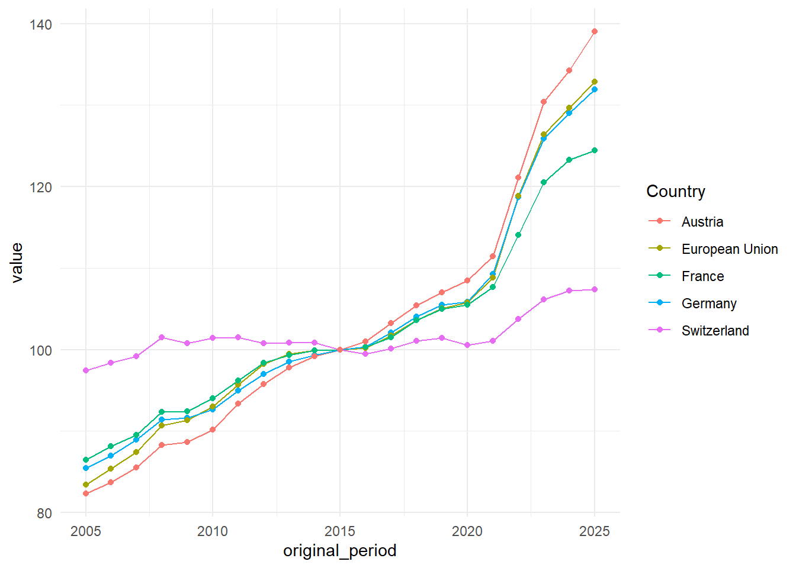
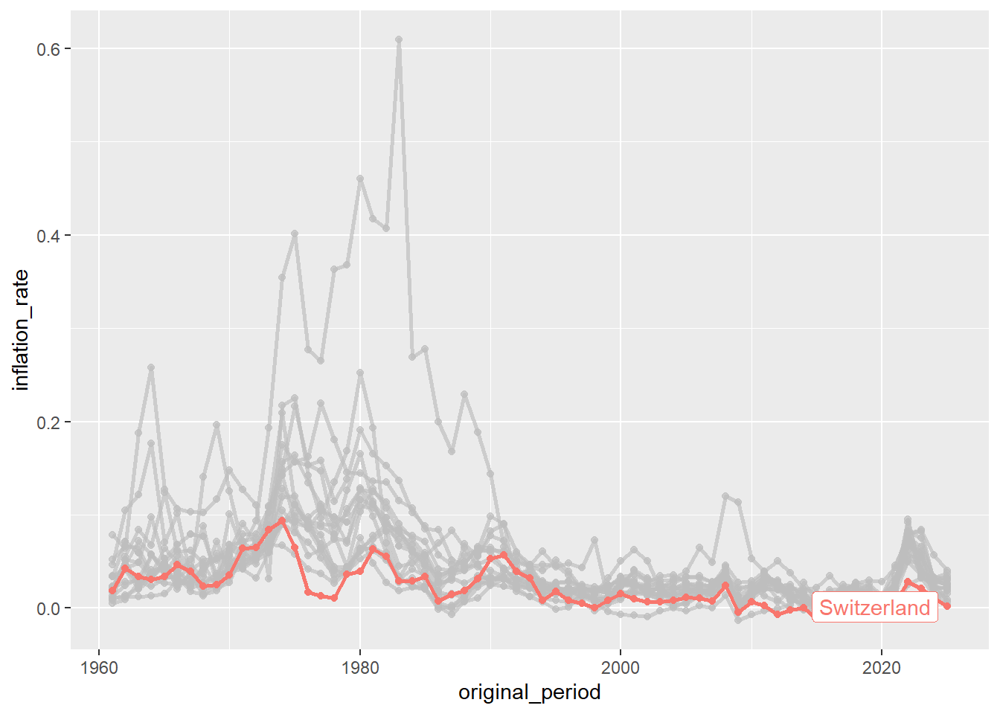
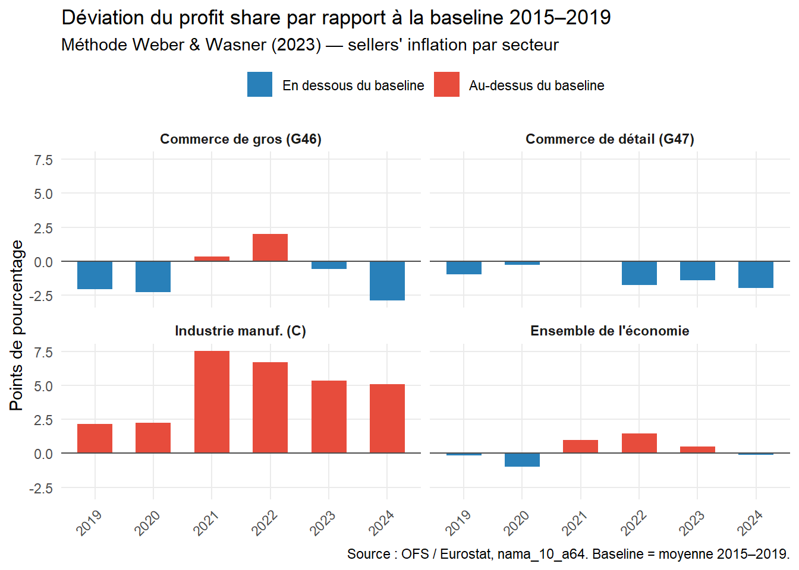
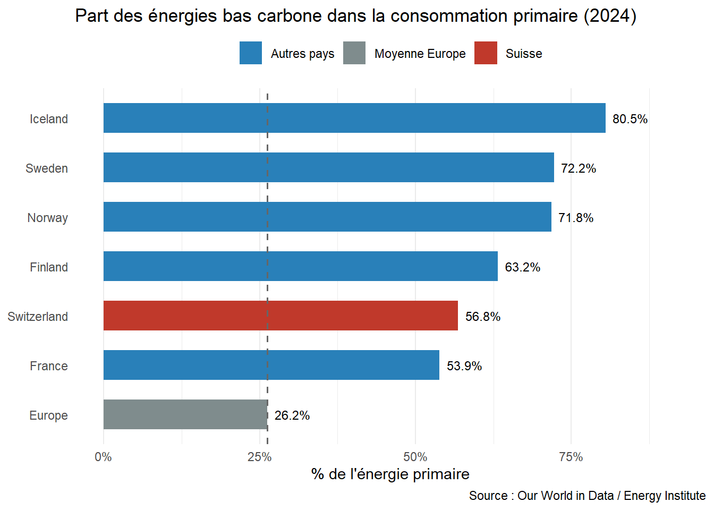
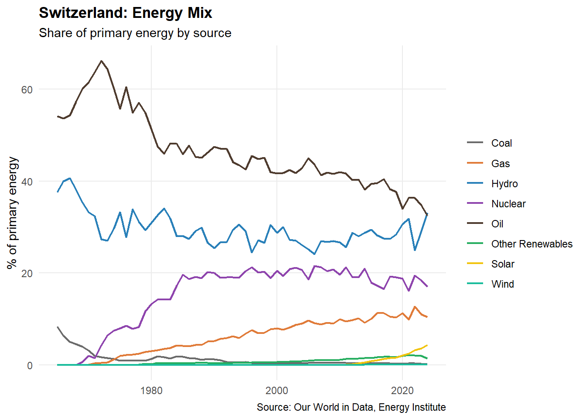
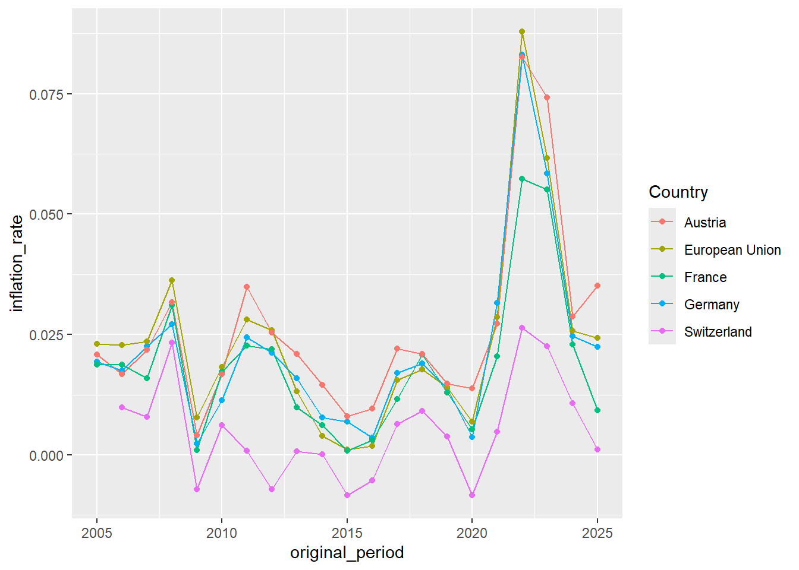
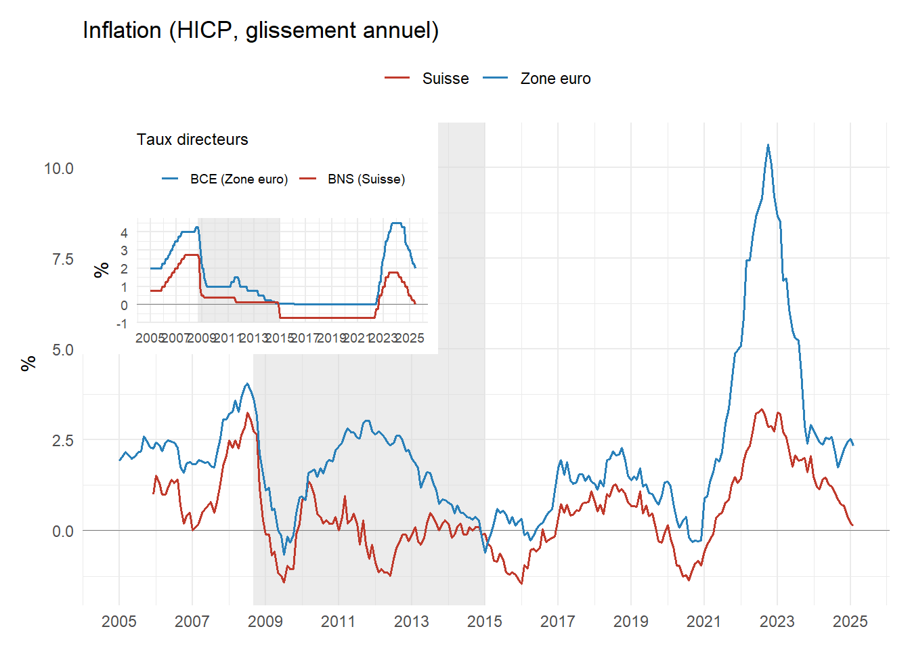
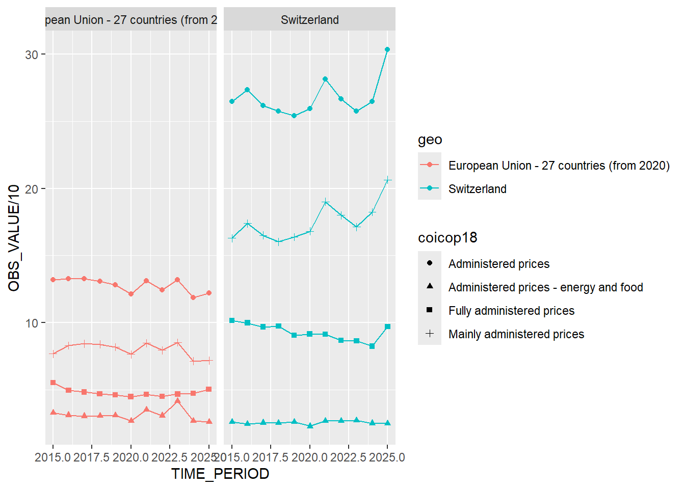

L’économie suisse est connue pour sa forte résistance à l’inflation. Depuis les années 2000, le taux d’inflation annuel de l’indice des prix à la consommation harmonisé (IPCH) est en Suisse systématiquement parmi les plus faibles vis-à-vis des autres pays développés. En comparaison international, seul le Japon a tendance a connaître des taux d’inflation plus faible suite à l’éclatement de la bulle spéculative nipponne de 1990.
# A tibble: 18 × 2
Country taux_moyen
<chr> <dbl>
1 Japan 0.00511
2 Switzerland 0.00603
3 France 0.0166
4 Finland 0.0180
5 Sweden 0.0185
6 Germany 0.0188
7 Denmark 0.0189
8 Italy 0.0198
9 Luxembourg 0.0218
10 Belgium 0.0233
11 Netherlands 0.0233
12 Spain 0.0234
13 Norway 0.0243
14 Korea 0.0244
15 Austria 0.0247
16 United Kingdom 0.0247
17 United States 0.0253
18 Iceland 0.0477 Qu’est-ce qui explique cette forte résilience de la Suisse face aux pressions inflationnistes ? Les explications les plus souvent mobilisées dans la littérature sont les suivantes:
Hypothèse appréciation du franc (reserve currency)
Le franc suisse est en effet considéré comme une monnaie forte servant de refuge lors des périodes de crise. Le statut du franc suisse en tant que “safe haven currency” date depuis au moins la première guerre mondiale. La Suisse ayant relativement mieux résisté à l’instabilité monétaire généralisée à la suite de la Grande Guerre. La non participation active de la Suisse à la Grande Guerre a aussi beaucoup contribué à l’attractivité du franc suisse, renforcé par la stabilité de ses institutions socio-politiques. Si ce statut de monnaie refuge se renforce graduellement lors de la période d’après-guerre, il se dévoile complètement avec la fin du système de Bretton-Woods en 1973, la fin de la parité fixe du franc vis-à-vis du dollar conduisant à une très forte appréciation du franc suisse. En théorie, l’appréciation tendancielle du franc suisse devrait avoir un effet négatif sur le taux d’inflation en réduisant le prix relatif des biens et services importés. Néanomoins, les estimations empirique de l’impact de l’appréciation du franc suisse invalident cette hypothèse. L’effet de “l’exchange rate pass-through” sur l’indice des prix à la consommation est en outre faible. R. Auer, Burstein, and Lein (2021) montrent qu’une appréciation du franc suisse de 1 % se traduit par une baisse des prix de détail des biens importés de seulement 0,55 % après deux trimestres. Oktay (2022) trouve exchange rate pass-through de 0,12 sur tous les biens et services de l’IPC, ce qui implique que seulement 12% d’un choc du taux de change EUR/CHF se répercute sur l’IPC suisse. Le pass-through est donc largement incomplet.
Hypothèse contrôle des prix
Certains observateurs interprètent la grande part des prix administrés dans l’indice des prix à la consommation harmonisé comme preuve d’une forte pratique de contrôle des prix en Suisse. En effet, la part des prix complètement ou partiellement administrés atteint une très forte proportion en Suisse en comparaison avec les autres pays européens. Suite aux chocs d’offre provoqués par la crise du covid et la guerre d’Ukraine, les économistes post-Keynésiens, notamment Isabella Weber, ont défendu le contrôle des prix comme une mesure permettant de combattre l’inflation tirée par l’augmentation des coûts de production, qui est d’autant plus renforcée par l’inflation des vendeurs profitant de la crise afin d’augmenter leurs taux de marge (Weber and Wasner 2023). L’importance des prix administrés permettraient donc à la Suisse de limiter l’impact de la hausse des prix.
Des études récentes tendent à montrer que cette part importante des prix administrés n’est pas la raison principale derrière la faible inflation en Suisse. La très grande majorité des prix administrés sont ceux des produits de santé, qui sont soit classés comme non administrés dans certains pays membres de la zone euro, soit comptabilisés comme relevant du secteur public, plutôt que de la consommation privée, car ils sont financés par des fonds publics. Si les prix administrés ont en Suisse moins augmenté que dans la zone euro, les prix non administrés ont eu aussi moins augmenté que dans la zone euro. L’estimation conduite par S. Auer, Beyeler, and Meier (2025) montre que les prix administrés n’expliquent que moins d’un quart des différences de taux d’inflation entre la Suisse et la zone euro. Par conséquent, les faibles taux d’inflations suisses s’expliquent avant tout par la faible augmentation des prix non-administrés
Hypothèse construction de l’IPC
La faible inflation suisse est un artefact statistique résultant de la faible pondération de certains items clés (par exemple l’énergie) ainsi que de la non prise en compte de certaines dépenses importantes comme les primes d’assurance-maladie. Certains économistes n’hésitent pas à ré-estimer l’IPC suisse avec des pondérations d’autres pays, par exemple allemands. Toutefois, malgré ces ré-estimations utilisant les poids d’autres pays, l’inflation reste nettement plus faible en Suisse.
Hypothèse d’une faible spirale salaires-prix et d’une faible inflation des vendeurs
La production suisse étant très orientée vers les exportations, une augmentation du coût du travail se répercute avant tout sur le prix des exportations, pas tant sur le prix des biens et services finaux domestiques. De plus, 40% des biens et services de l’IPC suisse ne sont pas sujets aux mécanismes de spirale salaire-prix (loyers et santé). (leutert_wageprice_2026?) trouvent qu’une augmentation du coût unitaire du travail sur l’indice des prix à la consommation n’est que très faible en Suisse, lorsque l’on contrôle pour l’inflation importée et les anticipations d’inflation. Ces auteurs considèrent que les dynamiques de l’IPC suisse sont avant tout tirés par la fluctuation des prix des importations causés par les fluctuations des prix du pétrole, l’inflation étrangère, du taux de change et des anticipations d’inflation.

Hypothèse mix énergétique.
Les fluctuations des prix du gaz et du pétrole ont des répercussions dramatiques sur l’inflation. Comme ces sources d’énergie fossile constituent une part extrêmement importante des intrans de production pour une très large quantité de biens et services, leurs prix influencent fortement l’évolution de l’IPC. Les chocs résultants de la crise du covid et de la guerre d’Ukraine ont en outre marqué le retour de l’inflation en EUrope.
La suisse étant relativement peu dépendante des énergies fossiles (gaz et pétrole) grâce à l’énergie hydraulique et nucléaire, les chocs pétrolier et du prix du gaz ont un impact plus faible en Suisse que dans d’autres pays plus dépendants aux énergies fossiles.
Cette explication paraît convaincante. Toutefois, certains pays ayant un meilleur mix energétique que la Suisse comme l’Islande, la Suède, la Norvège, ou la Finlande ont des taux d’inflation plus élevés qu’en Suisse. Néanmoins, la Suisse bénéficie d’un marché publique de l’énergie qui permet de garder le prix de l’énergie au niveau des coûts de production, alors que pour les pays nordiques le prix de leur énergie n’est pas découplé de celle des énergies fossiles à cause du marché européen de l’énergie (dans lequel les prix s’alignent sur le coût marginal, souvent du gaz et du charbon importé). Leur énergie est verte, mais est leur prix et donc alignée sur celui des énergies fossiles, ce qui n’est pas le cas en Suisse grâce à la régulation publique du marché de l’énergie et de l’électricité.
De plus, la Suisse est l’économie développée avec la plus faible intensité énergétique. Cela veut dire qu’elle consomme en réalité que peu d’énergie dans la production de sa valeur ajoutée grâce à une forte efficacité énergétique dans ses secteurs clés. Avec une intensité énergétique très faible, un choc d’offre se répercute moins directement sur l’IPC ainsi que sur les chaînes de valeurs. Une étude récente du Seco montre que cette faible intensité est présente dans tous les secteurs de l’économie suisse (agriculture, industrie, services et ménages). Par exemple, l’industrie manufacturière suissse consomme moins d’un tiers de l’énergie de la France et moins de la moitié de l’énergie de l’Allemagne pour chaque unité de valeur ajoutée brute. Cette faible intensité a été renforcée depuis 2010 par la croissance de l’industrie pharmaceutique (qui a relativement une faible intensité énergétique) dont la part dans la valeur ajoutée du secteur manufacturier suisse a augmenté de 15 à 31% entre 2010 et 2019.





Références
Auer, Raphael, Ariel Burstein, and Sarah M. Lein. 2021. “Exchange Rates and Prices: Evidence from the 2015 Swiss Franc Appreciation.” American Economic Review 111 (2): 652–86. https://doi.org/10.1257/aer.20181415.
Auer, Simone, Simon Beyeler, and Jonas Meier. 2025. “How Large Is the Impact of Administered Prices on Inflation in Switzerland?” 10/2025. Zürich: Swiss National Bank. https://www.snb.ch/en/publications/research/economic-notes/2025/economic_note_2025_10.
Oktay, Alex. 2022. “Heterogeneity in the Exchange Rate Pass-Through to Consumer Prices: The Swiss Franc Appreciation of 2015.” Swiss Journal of Economics and Statistics 158 (1): 21. https://doi.org/10.1186/s41937-022-00102-7.
Weber, Isabella M., and Evan Wasner. 2023. “Sellers’ Inflation, Profits and Conflict: Why Can Large Firms Hike Prices in an Emergency?” Review of Keynesian Economics 11 (2): 183–213. https://doi.org/10.4337/roke.2023.02.05.